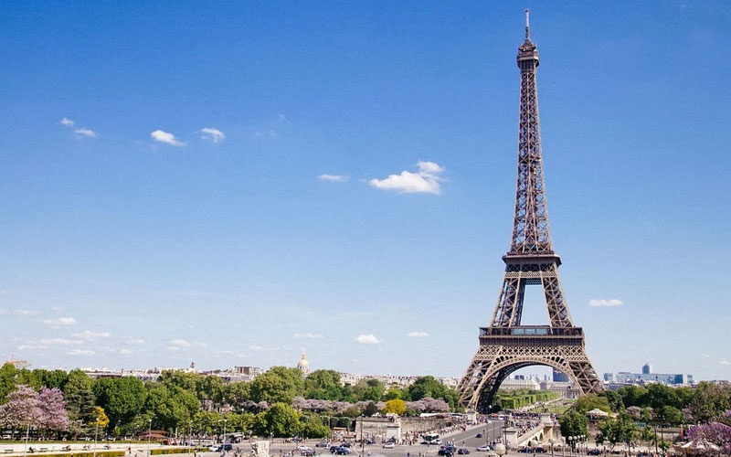

EuroTrip - Destinos da Europa
Destinos a serem visitados na Europa

Motivos para fazer uma Eurotrip
Motivos para fazer uma Eurotrip
- Explorar a História e a Cultura
- Paris, França: Visite a Torre Eiffel, o Louvre e desfrute da atmosfera romântica.
- Roma, Itália: Explore o Coliseu, o Vaticano e a rica história romana.
- Atenas, Grécia: Descubra a Acrópole e os antigos tesouros gregos.
- Desfrutar da Gastronomia
- Barcelona, Espanha: Experimente tapas autênticas e pratos de frutos do mar.
- Florença, Itália: Saboreie a culinária toscana e os famosos vinhos.
- Istambul, Turquia: Prove kebabs, baklava e chá turco.
- Maravilhar-se com a Natureza
- Interlaken, Suíça: Explore os Alpes suíços e participe de esportes de aventura.
- Santorini, Grécia: Relaxe nas praias de areia vulcânica e aprecie as vistas panorâmicas.
- Cinque Terre, Itália: Caminhe pelas trilhas costeiras e admire as paisagens deslumbrantes.